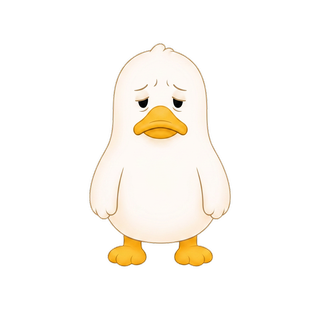
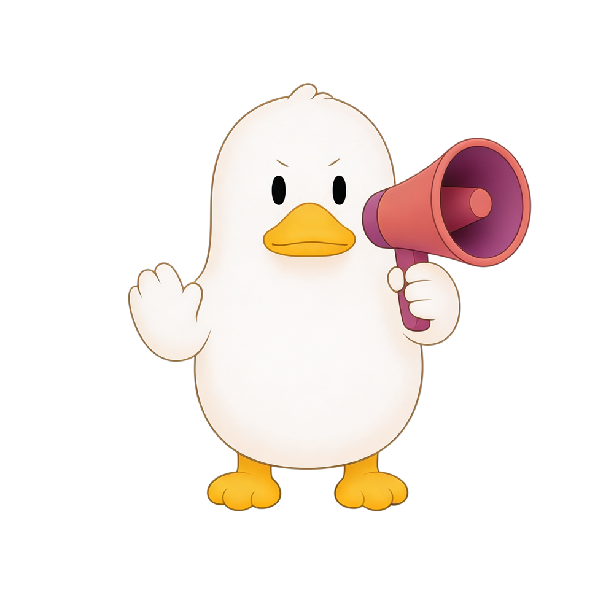
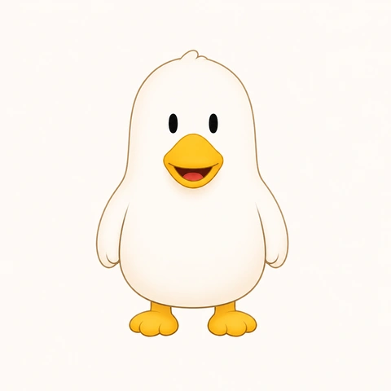
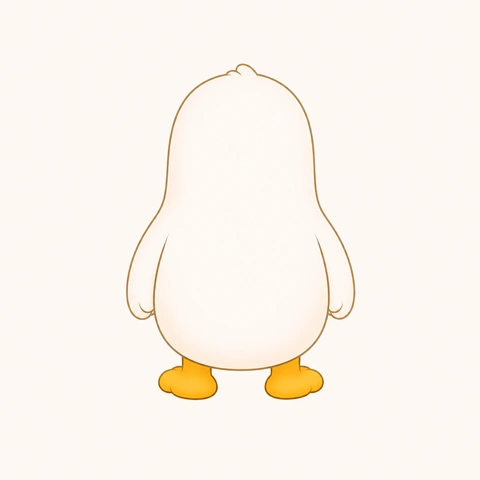
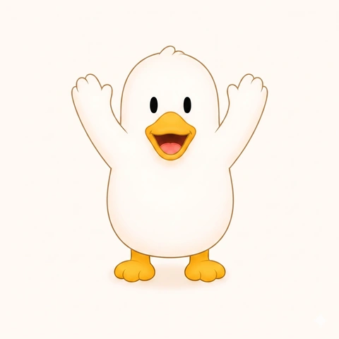
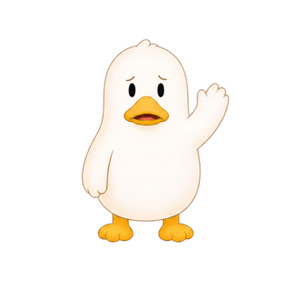

Design System
The behavioral design system behind Cuak — color tokens, mascot emotional states, 60/40 zoning architecture, and annotated UI components. Every pixel has a psychological purpose.
Each color maps to an emotional state. No decorative choices — every token has a behavioral role.
Accent — Happy
--accent
var(--brand-cuak)
Warning — Worried
--accent-warn
var(--accent-amber)
Sad — Reset
--accent-sad
var(--accent)
Background
--bg
#1E1A2E
Card Surface
--bg-card
#2D2845
Text Primary
--text
#F2EFE8
Each state maps to a psychological moment in the user's credit journey. The duck reacts — the user feels seen, not judged.
Neutral — Ready
Trigger: app open, no recent activity
Pure potential. No pressure. Cuak waits with expectation — not judgment.
Neutral stateHappy — On Track
Trigger: credit usage healthy / improving
Positive reinforcement. Cuak celebrates consistency — the system rewards, not just records.
Core Drive 2: Accomplishment
Worried — At Risk
Trigger: approaching credit threshold
Loss aversion activated. Cuak's distress makes risk visible and empathetic — not punitive. Most powerful retention state.
Core Drive 8: Loss Aversion
Sad — Reset
Trigger: threshold crossed
Emotional cost of loss, followed by resilience. Cuak mourns with the user — then invites them back without shame.
Guilt-free restartBefore the states shown above shipped, the character went through a reference pass — front, back and a raised-arm gesture — to lock proportions before drafting expressions. Not every take made it in.

Front — neutral

Back view

Gesture range

Read as alarm, not concern — closer to a warning gesture than an emotional cue. Worked against the "empathetic, not punitive" principle the Worried state is built on (see Annotated UI, below).
Same trigger, no gesture. The expression alone carries the state — arms stay down so it reads as concern, not alert.
Every surface — full screen or home widget — splits 60% data / 40% emotional state. Each zone activates a specific Octalysis Core Drive.
Small 2×2
Progress Focus
Usage % + current emotional state. Minimal surface, maximum signal.
→ Core Drive 2: Accomplishment
Small 2×2
Status Focus
Credit score tier + awareness metric. Contextual identity — who you are financially right now.
→ Core Drive 5: Social Influence
Wide 4×2 — Risk
Urgency Surface
Real-time countdown to threshold + Worried Cuak. Activates loss aversion passively.
→ Core Drive 8: Loss & Avoidance
Same financial information. Completely different emotional experience. This is the core design problem Cuak solves.
Cold numbers, no context. User sees debt — feels anxiety.
Same data, mascot emotional proxy. User sees progress — feels in control.
Strategic annotations connecting each UI element to its psychological function.
Mascot proxy
Cuak externalizes financial anxiety into a character — reducing cognitive load. Users process emotion through the duck, not through raw numbers. (Epley & Waytz — Anthropomorphism)
Usage % indicator — 60% zone
Credit utilization shown as percentage, not currency. Relative framing reduces anxiety vs absolute debt amounts. Positioned in the dominant 60% data zone.
Emotional state color — 40% zone
Background color shifts with Cuak's state. Green = safe, yellow = at risk, purple = reset. Visceral-level feedback (Don Norman) — no reading required.
Action nudge
Context-aware CTA that changes with emotional state. Cuak suggests — never commands. (Thaler & Sunstein — Nudge Theory)
Reusable components built around the emotional states. Each one has a defined behavioral role.
Emotional State Badge
Color + label encode the current state. Used in widgets, notifications, and cards. Always paired with mascot visual.
Credit Usage Progress Bar
Determinate progress — communicates exactly where the user stands. Color shifts at threshold to signal state change.
Action Card
Cuak suggests
Pay $80 to drop below 30%
→ This keeps me happy 🦆
Nudge card that appears when usage approaches a threshold. First-person mascot voice — empathetic, not punitive.
Countdown Widget (Urgency)
⚠ Payment due
3d 14h
Before Cuak gets worried
Real-time countdown activates Core Drive 8 (Loss Aversion) passively. Lives on home screen widget — visible without opening the app.
Your credit
is doing well.
Credit usage: 42%
You're using 42% of your available credit. Cuak recommends keeping this below 30% for the best credit score impact.
Credit utilization · Updated now